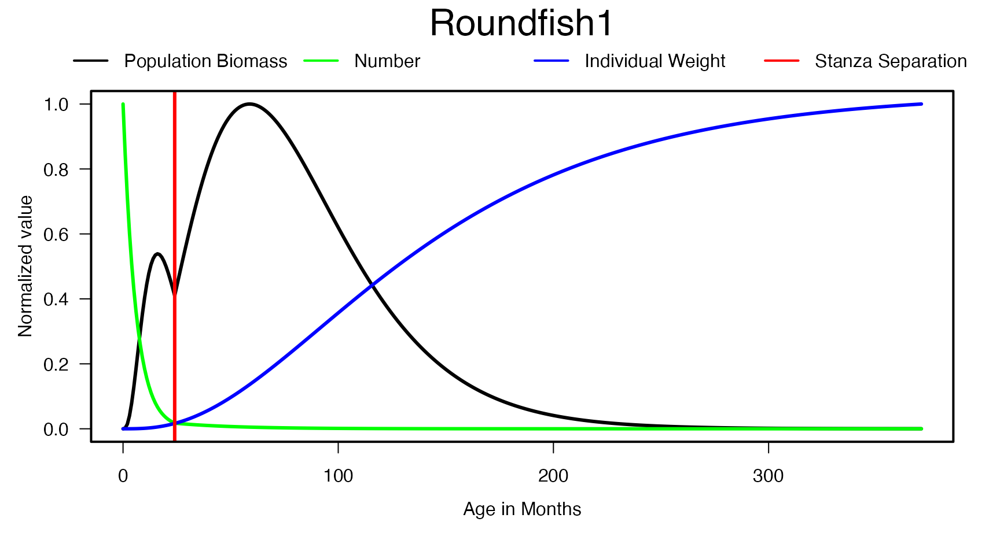

Rpath is an implementation of the ecosystem model Ecopath with Ecosim (EwE; Christensen and Pauly 19921, Walters et al. 19972). This vignette describes some of the basic functionality of the package using a fictional ecosystem, R Ecosystem. Any resemblance to an actual ecosystem is purely coincidental. To see the underlying mathematics please refer to Lucey et al. (in prep3).
Setting up Ecopath
Parameter file generation
Unlike the GUI based EwE software package, Rpath relies on a parameter input file. This file is actually a list of several different parameter files: model, diet, stanzas, and pedigree. Parameter files can be created outside of R and read in using the read.rpath.params function. This function will merge several different flat files into an R object of the list type. A preferred alternative is to generate the list file and populate it completely within R. The function create.rpath.params will generate an Rpath.param. This ensures that all of the correct columns are present in the parameter file.
The parameter file contains all of the information you would normally enter in the input data tabs in EwE. There are 2 necessary pieces of information to generate the parameter file: the group names and their corresponding type. The types are: living = 0, primary producer = 1, detritus = 2, and fleet = 3. If your model contains multi-stanza groups then you need 2 additional pieces of information: stanza group names (include NA for those groups not in a stanza) and the number of stanzas per stanza group.
#Groups and types for the R Ecosystem
groups <- c('Seabirds', 'Whales', 'Seals', 'JuvRoundfish1', 'AduRoundfish1',
'JuvRoundfish2', 'AduRoundfish2', 'JuvFlatfish1', 'AduFlatfish1',
'JuvFlatfish2', 'AduFlatfish2', 'OtherGroundfish', 'Foragefish1',
'Foragefish2', 'OtherForagefish', 'Megabenthos', 'Shellfish',
'Macrobenthos', 'Zooplankton', 'Phytoplankton', 'Detritus',
'Discards', 'Trawlers', 'Midwater', 'Dredgers')
types <- c(rep(0, 19), 1, rep(2, 2), rep(3, 3))
stgroups <- c(rep(NA, 3), rep('Roundfish1', 2), rep('Roundfish2', 2),
rep('Flatfish1', 2), rep('Flatfish2', 2), rep(NA, 14))
REco.params <- create.rpath.params(group = groups, type = types, stgroup = stgroups)REco.params now contains a list of 4 objects: model, diet, stanzas, and pedigree. The majority of the parameters are populated with NA save those that have logical default vaules (i.e 0.66667 for VBGF_d).
Model parameters
The model parameter list contains the biomass, production to biomass, consumption to biomass, etc. parameters as well as the detrital fate parameters and fleet landings and discards.
| Group | Type | Biomass | PB | QB | EE | ProdCons | BioAcc | Unassim | DetInput | Detritus | Discards | Trawlers | Midwater | Dredgers | Trawlers.disc | Midwater.disc | Dredgers.disc |
|---|---|---|---|---|---|---|---|---|---|---|---|---|---|---|---|---|---|
| Seabirds | 0 | NA | NA | NA | NA | NA | NA | NA | NA | NA | NA | 0 | 0 | 0 | 0 | 0 | 0 |
| Whales | 0 | NA | NA | NA | NA | NA | NA | NA | NA | NA | NA | 0 | 0 | 0 | 0 | 0 | 0 |
| Seals | 0 | NA | NA | NA | NA | NA | NA | NA | NA | NA | NA | 0 | 0 | 0 | 0 | 0 | 0 |
| JuvRoundfish1 | 0 | NA | NA | NA | NA | NA | NA | NA | NA | NA | NA | 0 | 0 | 0 | 0 | 0 | 0 |
| AduRoundfish1 | 0 | NA | NA | NA | NA | NA | NA | NA | NA | NA | NA | 0 | 0 | 0 | 0 | 0 | 0 |
| JuvRoundfish2 | 0 | NA | NA | NA | NA | NA | NA | NA | NA | NA | NA | 0 | 0 | 0 | 0 | 0 | 0 |
| AduRoundfish2 | 0 | NA | NA | NA | NA | NA | NA | NA | NA | NA | NA | 0 | 0 | 0 | 0 | 0 | 0 |
| JuvFlatfish1 | 0 | NA | NA | NA | NA | NA | NA | NA | NA | NA | NA | 0 | 0 | 0 | 0 | 0 | 0 |
| AduFlatfish1 | 0 | NA | NA | NA | NA | NA | NA | NA | NA | NA | NA | 0 | 0 | 0 | 0 | 0 | 0 |
| JuvFlatfish2 | 0 | NA | NA | NA | NA | NA | NA | NA | NA | NA | NA | 0 | 0 | 0 | 0 | 0 | 0 |
| AduFlatfish2 | 0 | NA | NA | NA | NA | NA | NA | NA | NA | NA | NA | 0 | 0 | 0 | 0 | 0 | 0 |
| OtherGroundfish | 0 | NA | NA | NA | NA | NA | NA | NA | NA | NA | NA | 0 | 0 | 0 | 0 | 0 | 0 |
| Foragefish1 | 0 | NA | NA | NA | NA | NA | NA | NA | NA | NA | NA | 0 | 0 | 0 | 0 | 0 | 0 |
| Foragefish2 | 0 | NA | NA | NA | NA | NA | NA | NA | NA | NA | NA | 0 | 0 | 0 | 0 | 0 | 0 |
| OtherForagefish | 0 | NA | NA | NA | NA | NA | NA | NA | NA | NA | NA | 0 | 0 | 0 | 0 | 0 | 0 |
| Megabenthos | 0 | NA | NA | NA | NA | NA | NA | NA | NA | NA | NA | 0 | 0 | 0 | 0 | 0 | 0 |
| Shellfish | 0 | NA | NA | NA | NA | NA | NA | NA | NA | NA | NA | 0 | 0 | 0 | 0 | 0 | 0 |
| Macrobenthos | 0 | NA | NA | NA | NA | NA | NA | NA | NA | NA | NA | 0 | 0 | 0 | 0 | 0 | 0 |
| Zooplankton | 0 | NA | NA | NA | NA | NA | NA | NA | NA | NA | NA | 0 | 0 | 0 | 0 | 0 | 0 |
| Phytoplankton | 1 | NA | NA | NA | NA | NA | NA | NA | NA | NA | NA | 0 | 0 | 0 | 0 | 0 | 0 |
| Detritus | 2 | NA | NA | NA | NA | NA | NA | NA | 0 | NA | NA | 0 | 0 | 0 | 0 | 0 | 0 |
| Discards | 2 | NA | NA | NA | NA | NA | NA | NA | 0 | NA | NA | 0 | 0 | 0 | 0 | 0 | 0 |
| Trawlers | 3 | NA | NA | NA | NA | NA | NA | NA | NA | NA | NA | NA | NA | NA | NA | NA | NA |
| Midwater | 3 | NA | NA | NA | NA | NA | NA | NA | NA | NA | NA | NA | NA | NA | NA | NA | NA |
| Dredgers | 3 | NA | NA | NA | NA | NA | NA | NA | NA | NA | NA | NA | NA | NA | NA | NA | NA |
Each of the parameter lists are data tables (With the exception of the stanzas list which is itself a list of an integer and two data tables). Data tables are an extension of the classic data frame class. Advantages of data tables include simplified indexing which eases the process of populating the parameters. For example you can add data to a specific slot or fill an entire column.
#Example of filling specific slots
REco.params$model[Group %in% c('Seals', 'Megabenthos'), EE := 0.8]
#Example of filling an entire column
biomass <- c(0.0149, 0.454, NA, NA, 1.39, NA, 5.553, NA, 5.766, NA,
0.739, 7.4, 5.1, 4.7, 5.1, NA, 7, 17.4, 23, 10, rep(NA, 5))
REco.params$model[, Biomass := biomass]Note the use of the operator ‘:=’ to assign values. This is unique to data tables.
| Group | Type | Biomass | EE |
|---|---|---|---|
| Seabirds | 0 | 0.0149 | NA |
| Whales | 0 | 0.4540 | NA |
| Seals | 0 | NA | 0.8 |
| JuvRoundfish1 | 0 | NA | NA |
| AduRoundfish1 | 0 | 1.3900 | NA |
| JuvRoundfish2 | 0 | NA | NA |
| AduRoundfish2 | 0 | 5.5530 | NA |
| JuvFlatfish1 | 0 | NA | NA |
| AduFlatfish1 | 0 | 5.7660 | NA |
| JuvFlatfish2 | 0 | NA | NA |
| AduFlatfish2 | 0 | 0.7390 | NA |
| OtherGroundfish | 0 | 7.4000 | NA |
| Foragefish1 | 0 | 5.1000 | NA |
| Foragefish2 | 0 | 4.7000 | NA |
| OtherForagefish | 0 | 5.1000 | NA |
| Megabenthos | 0 | NA | 0.8 |
| Shellfish | 0 | 7.0000 | NA |
| Macrobenthos | 0 | 17.4000 | NA |
| Zooplankton | 0 | 23.0000 | NA |
| Phytoplankton | 1 | 10.0000 | NA |
| Detritus | 2 | NA | NA |
| Discards | 2 | NA | NA |
| Trawlers | 3 | NA | NA |
| Midwater | 3 | NA | NA |
| Dredgers | 3 | NA | NA |
Here are the rest of the columns for the model list.
#Model
biomass <- c(0.0149, 0.454, NA, NA, 1.39, NA, 5.553, NA, 5.766, NA,
0.739, 7.4, 5.1, 4.7, 5.1, NA, 7, 17.4, 23, 10, rep(NA, 5))
pb <- c(0.098, 0.031, 0.100, 2.026, 0.42, 2.1, 0.425, 1.5, 0.26, 1.1, 0.18, 0.6,
0.61, 0.65, 1.5, 0.9, 1.3, 7, 39, 240, rep(NA, 5))
qb <- c(76.750, 6.976, 34.455, NA, 2.19, NA, 3.78, NA, 1.44, NA, 1.69,
1.764, 3.52, 5.65, 3.6, 2.984, rep (NA, 9))
REco.params$model[, Biomass := biomass]
REco.params$model[, PB := pb]
REco.params$model[, QB := qb]
#EE for groups w/o biomass
REco.params$model[Group %in% c('Seals', 'Megabenthos'), EE := 0.8]
#Production to Consumption for those groups without a QB
REco.params$model[Group %in% c('Shellfish', 'Zooplankton'), ProdCons:= 0.25]
REco.params$model[Group == 'Macrobenthos', ProdCons := 0.35]
#Biomass accumulation and unassimilated consumption
REco.params$model[, BioAcc := c(rep(0, 22), rep(NA, 3))]
REco.params$model[, Unassim := c(rep(0.2, 18), 0.4, rep(0, 3), rep(NA, 3))]
#Detrital Fate
REco.params$model[, Detritus := c(rep(1, 20), rep(0, 5))]
REco.params$model[, Discards := c(rep(0, 22), rep(1, 3))]
#Fisheries
#Landings
trawl <- c(rep(0, 4), 0.08, 0, 0.32, 0, 0.09, 0, 0.05, 0.2, rep(0, 10), rep(NA, 3))
mid <- c(rep(0, 12), 0.3, 0.08, 0.02, rep(0, 7), rep(NA, 3))
dredge <- c(rep(0, 15), 0.1, 0.5, rep(0, 5), rep(NA, 3))
REco.params$model[, Trawlers := trawl]
REco.params$model[, Midwater := mid]
REco.params$model[, Dredgers := dredge]
#Discards
trawl.d <- c(1e-5, 1e-7, 0.001, 0.001, 0.005, 0.001, 0.009, 0.001, 0.04, 0.001,
0.01, 0.08, 0.001, 0.001, 0.001, rep(0, 7), rep(NA, 3))
mid.d <- c(rep(0, 2), 0.001, 0.001, 0.01, 0.001, 0.01, rep(0, 4), 0.05, 0.05,
0.01, 0.01, rep(0, 7), rep(NA, 3))
dredge.d <- c(rep(0, 3), 0.001, 0.05, 0.001, 0.05, 0.001, 0.05, 0.001, 0.01, 0.05,
rep(0, 3), 0.09, 0.01, 1e-4, rep(0, 4), rep(NA, 3))
REco.params$model[, Trawlers.disc := trawl.d]
REco.params$model[, Midwater.disc := mid.d]
REco.params$model[, Dredgers.disc := dredge.d]| Group | Type | Biomass | PB | QB | EE | ProdCons | BioAcc | Unassim | DetInput | Detritus | Discards | Trawlers | Midwater | Dredgers | Trawlers.disc | Midwater.disc | Dredgers.disc |
|---|---|---|---|---|---|---|---|---|---|---|---|---|---|---|---|---|---|
| Seabirds | 0 | 0.0149 | 0.098 | 76.750 | NA | NA | 0 | 0.2 | NA | 1 | 0 | 0.00 | 0.00 | 0.0 | 1e-05 | 0.000 | 0e+00 |
| Whales | 0 | 0.4540 | 0.031 | 6.976 | NA | NA | 0 | 0.2 | NA | 1 | 0 | 0.00 | 0.00 | 0.0 | 1e-07 | 0.000 | 0e+00 |
| Seals | 0 | NA | 0.100 | 34.455 | 0.8 | NA | 0 | 0.2 | NA | 1 | 0 | 0.00 | 0.00 | 0.0 | 1e-03 | 0.001 | 0e+00 |
| JuvRoundfish1 | 0 | NA | 2.026 | NA | NA | NA | 0 | 0.2 | NA | 1 | 0 | 0.00 | 0.00 | 0.0 | 1e-03 | 0.001 | 1e-03 |
| AduRoundfish1 | 0 | 1.3900 | 0.420 | 2.190 | NA | NA | 0 | 0.2 | NA | 1 | 0 | 0.08 | 0.00 | 0.0 | 5e-03 | 0.010 | 5e-02 |
| JuvRoundfish2 | 0 | NA | 2.100 | NA | NA | NA | 0 | 0.2 | NA | 1 | 0 | 0.00 | 0.00 | 0.0 | 1e-03 | 0.001 | 1e-03 |
| AduRoundfish2 | 0 | 5.5530 | 0.425 | 3.780 | NA | NA | 0 | 0.2 | NA | 1 | 0 | 0.32 | 0.00 | 0.0 | 9e-03 | 0.010 | 5e-02 |
| JuvFlatfish1 | 0 | NA | 1.500 | NA | NA | NA | 0 | 0.2 | NA | 1 | 0 | 0.00 | 0.00 | 0.0 | 1e-03 | 0.000 | 1e-03 |
| AduFlatfish1 | 0 | 5.7660 | 0.260 | 1.440 | NA | NA | 0 | 0.2 | NA | 1 | 0 | 0.09 | 0.00 | 0.0 | 4e-02 | 0.000 | 5e-02 |
| JuvFlatfish2 | 0 | NA | 1.100 | NA | NA | NA | 0 | 0.2 | NA | 1 | 0 | 0.00 | 0.00 | 0.0 | 1e-03 | 0.000 | 1e-03 |
| AduFlatfish2 | 0 | 0.7390 | 0.180 | 1.690 | NA | NA | 0 | 0.2 | NA | 1 | 0 | 0.05 | 0.00 | 0.0 | 1e-02 | 0.000 | 1e-02 |
| OtherGroundfish | 0 | 7.4000 | 0.600 | 1.764 | NA | NA | 0 | 0.2 | NA | 1 | 0 | 0.20 | 0.00 | 0.0 | 8e-02 | 0.050 | 5e-02 |
| Foragefish1 | 0 | 5.1000 | 0.610 | 3.520 | NA | NA | 0 | 0.2 | NA | 1 | 0 | 0.00 | 0.30 | 0.0 | 1e-03 | 0.050 | 0e+00 |
| Foragefish2 | 0 | 4.7000 | 0.650 | 5.650 | NA | NA | 0 | 0.2 | NA | 1 | 0 | 0.00 | 0.08 | 0.0 | 1e-03 | 0.010 | 0e+00 |
| OtherForagefish | 0 | 5.1000 | 1.500 | 3.600 | NA | NA | 0 | 0.2 | NA | 1 | 0 | 0.00 | 0.02 | 0.0 | 1e-03 | 0.010 | 0e+00 |
| Megabenthos | 0 | NA | 0.900 | 2.984 | 0.8 | NA | 0 | 0.2 | NA | 1 | 0 | 0.00 | 0.00 | 0.1 | 0e+00 | 0.000 | 9e-02 |
| Shellfish | 0 | 7.0000 | 1.300 | NA | NA | 0.25 | 0 | 0.2 | NA | 1 | 0 | 0.00 | 0.00 | 0.5 | 0e+00 | 0.000 | 1e-02 |
| Macrobenthos | 0 | 17.4000 | 7.000 | NA | NA | 0.35 | 0 | 0.2 | NA | 1 | 0 | 0.00 | 0.00 | 0.0 | 0e+00 | 0.000 | 1e-04 |
| Zooplankton | 0 | 23.0000 | 39.000 | NA | NA | 0.25 | 0 | 0.4 | NA | 1 | 0 | 0.00 | 0.00 | 0.0 | 0e+00 | 0.000 | 0e+00 |
| Phytoplankton | 1 | 10.0000 | 240.000 | NA | NA | NA | 0 | 0.0 | NA | 1 | 0 | 0.00 | 0.00 | 0.0 | 0e+00 | 0.000 | 0e+00 |
| Detritus | 2 | NA | NA | NA | NA | NA | 0 | 0.0 | 0 | 0 | 0 | 0.00 | 0.00 | 0.0 | 0e+00 | 0.000 | 0e+00 |
| Discards | 2 | NA | NA | NA | NA | NA | 0 | 0.0 | 0 | 0 | 0 | 0.00 | 0.00 | 0.0 | 0e+00 | 0.000 | 0e+00 |
| Trawlers | 3 | NA | NA | NA | NA | NA | NA | NA | NA | 0 | 1 | NA | NA | NA | NA | NA | NA |
| Midwater | 3 | NA | NA | NA | NA | NA | NA | NA | NA | 0 | 1 | NA | NA | NA | NA | NA | NA |
| Dredgers | 3 | NA | NA | NA | NA | NA | NA | NA | NA | 0 | 1 | NA | NA | NA | NA | NA | NA |
###Stanza Parameters You may have noticed that the biomass and consumption to biomass parameters are missing from some of the multistanza groups. Similar to EwE, Rpath calculates those parameters to ensure that stanza groups support one another (Christensen and Walters 20044). In order to do this, you need to populate the stanza list. As mentioned earlier, this is actually a list itself containing 3 things: the number of stanza groups, stanza group parameters, and individual stanza parameters. The number of stanzas is automatically populated. For stanza groups you need their von Bertalanffy growth function specialized K and weight at 50% maturity divided by their weight infinity (relative weight at maturity). Individual stanzas need the first and last month the species is in the stanza, the total mortality (Z) on the stanza, and whether or not it is the leading stanza.
#Group parameters
REco.params$stanzas$stgroups[, VBGF_Ksp := c(0.145, 0.295, 0.0761, 0.112)]
REco.params$stanzas$stgroups[, Wmat := c(0.0769, 0.561, 0.117, 0.321)]
#Individual stanza parameters
REco.params$stanzas$stindiv[, First := c(rep(c(0, 24), 3), 0, 48)]
REco.params$stanzas$stindiv[, Last := c(rep(c(23, 400), 3), 47, 400)]
REco.params$stanzas$stindiv[, Z := c(2.026, 0.42, 2.1, 0.425, 1.5,
0.26, 1.1, 0.18)]
REco.params$stanzas$stindiv[, Leading := rep(c(F, T), 4)]| StGroupNum | StanzaGroup | nstanzas | VBGF_Ksp | VBGF_d | Wmat | BAB | RecPower |
|---|---|---|---|---|---|---|---|
| 1 | Roundfish1 | 2 | 0.1450 | 0.66667 | 0.0769 | 0 | 1 |
| 2 | Roundfish2 | 2 | 0.2950 | 0.66667 | 0.5610 | 0 | 1 |
| 3 | Flatfish1 | 2 | 0.0761 | 0.66667 | 0.1170 | 0 | 1 |
| 4 | Flatfish2 | 2 | 0.1120 | 0.66667 | 0.3210 | 0 | 1 |
| StGroupNum | StanzaNum | GroupNum | Group | First | Last | Z | Leading |
|---|---|---|---|---|---|---|---|
| 1 | 0 | 4 | JuvRoundfish1 | 0 | 23 | 2.026 | FALSE |
| 1 | 0 | 5 | AduRoundfish1 | 24 | 400 | 0.420 | TRUE |
| 2 | 0 | 6 | JuvRoundfish2 | 0 | 23 | 2.100 | FALSE |
| 2 | 0 | 7 | AduRoundfish2 | 24 | 400 | 0.425 | TRUE |
| 3 | 0 | 8 | JuvFlatfish1 | 0 | 23 | 1.500 | FALSE |
| 3 | 0 | 9 | AduFlatfish1 | 24 | 400 | 0.260 | TRUE |
| 4 | 0 | 10 | JuvFlatfish2 | 0 | 47 | 1.100 | FALSE |
| 4 | 0 | 11 | AduFlatfish2 | 48 | 400 | 0.180 | TRUE |
The final month of the ultimate stanza can be set to any value. The function rpath.stanzas will calculate the final month as the point where the species reaches 90% Winf. The function rpath.stanzas will also add data tables containing the weight, number, and consumption at age for each stanza group.
REco.params <- rpath.stanzas(REco.params)#> Warning in kable_pipe(x = structure(character(0), .Dim = c(0L, 0L), .Dimnames =
#> list(: The table should have a header (column names)Table: Completed stanzas table
|| || || ||
| age | WageS | QageS | Survive | survive_L | B | Q | NageS |
|---|---|---|---|---|---|---|---|
| 0 | 0.0000000 | 0.0000000 | 1.0000000 | 0.8446497 | 0.00e+00 | 0.0000000 | 23.43377 |
| 1 | 0.0000017 | 0.0001442 | 0.8446497 | 0.8446497 | 1.50e-06 | 0.0001218 | 19.79333 |
| 2 | 0.0000136 | 0.0005700 | 0.7134331 | 0.8446497 | 9.70e-06 | 0.0004067 | 16.71843 |
| 3 | 0.0000451 | 0.0012673 | 0.6026010 | 0.8446497 | 2.72e-05 | 0.0007637 | 14.12121 |
| 4 | 0.0001050 | 0.0022261 | 0.5089867 | 0.8446497 | 5.35e-05 | 0.0011330 | 11.92748 |
| 5 | 0.0002015 | 0.0034369 | 0.4299155 | 0.8446497 | 8.66e-05 | 0.0014776 | 10.07454 |
Output from the rpath.stanzas function can be plotted using the stanzaplot function.
stanzaplot(REco.params, StanzaGroup = 1) Note: If you do not have multistanza groups in your model, you do not have to run rpath.stanzas.
###Diet Parameters The data entered in the diet list is the same as the data entered in the diet composition tab in EwE. Just as within EwE, the columns represent the predators while the rows represent the prey. Individual diet components can be adjusted by specifying the prey in the ‘Group’ variable and assigning a value to the predator. For example, if you wanted to assign 10% of the seabird diet as ‘Other Groundfish’ you could do it like this:
REco.params$diet[Group == 'OtherGroundfish', Seabirds := 0.1]You can also assign the entire diet composition for a predator:
whale.diet <- c(rep(NA, 3), 0.01, NA, 0.01, NA, 0.01, NA, 0.01, rep(NA, 4), 0.1,
rep(NA, 3), 0.86, rep(NA, 3), NA)
REco.params$diet[, Whales := whale.diet]| Group | Seabirds | Whales |
|---|---|---|
| Seabirds | NA | NA |
| Whales | NA | NA |
| Seals | NA | NA |
| JuvRoundfish1 | NA | 0.01 |
| AduRoundfish1 | NA | NA |
| JuvRoundfish2 | NA | 0.01 |
| AduRoundfish2 | NA | NA |
| JuvFlatfish1 | NA | 0.01 |
| AduFlatfish1 | NA | NA |
| JuvFlatfish2 | NA | 0.01 |
| AduFlatfish2 | NA | NA |
| OtherGroundfish | 0.1 | NA |
| Foragefish1 | NA | NA |
| Foragefish2 | NA | NA |
| OtherForagefish | NA | 0.10 |
| Megabenthos | NA | NA |
| Shellfish | NA | NA |
| Macrobenthos | NA | NA |
| Zooplankton | NA | 0.86 |
| Phytoplankton | NA | NA |
| Detritus | NA | NA |
| Discards | NA | NA |
| Import | NA | NA |
Here is the completed model parameter file for R Ecosystem:
REco.params$diet[, Seabirds := c(rep(NA, 11), 0.1, 0.25, 0.2, 0.15,
rep(NA, 6), 0.3, NA)]
REco.params$diet[, Whales := c(rep(NA, 3), 0.01, NA, 0.01, NA, 0.01,
NA, 0.01, rep(NA, 4), 0.1, rep(NA, 3),
0.86, rep(NA, 3), NA)]
REco.params$diet[, Seals := c(rep(NA, 3), 0.05, 0.1, 0.05, 0.2, 0.005,
0.05, 0.005, 0.01, 0.24, rep(0.05, 4),
0.09, rep(NA, 5), NA)]
REco.params$diet[, JuvRoundfish1 := c(rep(NA, 3), rep(c(1e-4, NA), 4), 1e-3,
rep(NA, 2), 0.05, 1e-4, NA, .02, 0.7785,
0.1, 0.05, NA, NA)]
REco.params$diet[, AduRoundfish1 := c(rep(NA, 5), 1e-3, 0.01, 1e-3, 0.05, 1e-3,
0.01, 0.29, 0.1, 0.1, 0.347, 0.03, NA,
0.05, 0.01, rep(NA, 3), NA)]
REco.params$diet[, JuvRoundfish2 := c(rep(NA, 3), rep(c(1e-4, NA), 4), 1e-3,
rep(NA, 2), 0.05, 1e-4, NA, .02, 0.7785,
0.1, .05, NA, NA)]
REco.params$diet[, AduRoundfish2 := c(rep(NA, 3), 1e-4, NA, 1e-4, NA, rep(1e-4, 4),
0.1, rep(0.05, 3), 0.2684, 0.01, 0.37, 0.001,
NA, 0.1, NA, NA)]
REco.params$diet[, JuvFlatfish1 := c(rep(NA, 3), rep(c(1e-4, NA), 4), rep(NA, 3),
rep(1e-4, 2), NA, 0.416, 0.4334, 0.1, 0.05,
NA, NA)]
REco.params$diet[, AduFlatfish1 := c(rep(NA, 7), rep(1e-4, 5), rep(NA, 2), 0.001,
0.05, 0.001, 0.6, 0.2475, NA, 0.1, NA, NA)]
REco.params$diet[, JuvFlatfish2 := c(rep(NA, 3), rep(c(1e-4, NA), 4), rep(NA, 3),
rep(1e-4, 2), NA, 0.416, 0.4334, 0.1, 0.05,
NA, NA)]
REco.params$diet[, AduFlatfish2 := c(rep(NA, 7), 1e-4, NA, 1e-4, rep(NA, 4),
rep(1e-4, 3), 0.44, 0.3895, NA, 0.17, NA, NA)]
REco.params$diet[, OtherGroundfish := c(rep(NA, 3), rep(1e-4, 8), 0.05, 0.08, 0.0992,
0.3, 0.15, 0.01, 0.3, 0.01, rep(NA, 3), NA)]
REco.params$diet[, Foragefish1 := c(rep(NA, 3), rep(c(1e-4, NA), 4), rep(NA, 7),
0.8196, 0.06, 0.12, NA, NA)]
REco.params$diet[, Foragefish2 := c(rep(NA, 3), rep(c(1e-4, NA), 4), rep(NA, 7),
0.8196, 0.06, 0.12, NA, NA)]
REco.params$diet[, OtherForagefish := c(rep(NA, 3), rep(c(1e-4, NA), 4), rep(NA, 7),
0.8196, 0.06, 0.12, NA, NA)]
REco.params$diet[, Megabenthos := c(rep(NA, 15), 0.1, 0.03, 0.55, rep(NA, 2), 0.32,
NA, NA)]
REco.params$diet[, Shellfish := c(rep(NA, 18), 0.3, 0.5, 0.2, NA, NA)]
REco.params$diet[, Macrobenthos := c(rep(NA, 16), 0.01, rep(0.2, 2), NA, 0.59, NA, NA)]
REco.params$diet[, Zooplankton := c(rep(NA, 18), 0.2, 0.6, 0.2, NA, NA)]| Group | Seabirds | Whales | Seals | JuvRoundfish1 | AduRoundfish1 | JuvRoundfish2 | AduRoundfish2 | JuvFlatfish1 | AduFlatfish1 | JuvFlatfish2 | AduFlatfish2 | OtherGroundfish | Foragefish1 | Foragefish2 | OtherForagefish | Megabenthos | Shellfish | Macrobenthos | Zooplankton | Phytoplankton |
|---|---|---|---|---|---|---|---|---|---|---|---|---|---|---|---|---|---|---|---|---|
| Seabirds | NA | NA | NA | NA | NA | NA | NA | NA | NA | NA | NA | NA | NA | NA | NA | NA | NA | NA | NA | NA |
| Whales | NA | NA | NA | NA | NA | NA | NA | NA | NA | NA | NA | NA | NA | NA | NA | NA | NA | NA | NA | NA |
| Seals | NA | NA | NA | NA | NA | NA | NA | NA | NA | NA | NA | NA | NA | NA | NA | NA | NA | NA | NA | NA |
| JuvRoundfish1 | NA | 0.01 | 0.050 | 0.0001 | NA | 0.0001 | 0.0001 | 0.0001 | NA | 0.0001 | NA | 0.0001 | 0.0001 | 0.0001 | 0.0001 | NA | NA | NA | NA | NA |
| AduRoundfish1 | NA | NA | 0.100 | NA | NA | NA | NA | NA | NA | NA | NA | 0.0001 | NA | NA | NA | NA | NA | NA | NA | NA |
| JuvRoundfish2 | NA | 0.01 | 0.050 | 0.0001 | 0.001 | 0.0001 | 0.0001 | 0.0001 | NA | 0.0001 | NA | 0.0001 | 0.0001 | 0.0001 | 0.0001 | NA | NA | NA | NA | NA |
| AduRoundfish2 | NA | NA | 0.200 | NA | 0.010 | NA | NA | NA | NA | NA | NA | 0.0001 | NA | NA | NA | NA | NA | NA | NA | NA |
| JuvFlatfish1 | NA | 0.01 | 0.005 | 0.0001 | 0.001 | 0.0001 | 0.0001 | 0.0001 | 0.0001 | 0.0001 | 0.0001 | 0.0001 | 0.0001 | 0.0001 | 0.0001 | NA | NA | NA | NA | NA |
| AduFlatfish1 | NA | NA | 0.050 | NA | 0.050 | NA | 0.0001 | NA | 0.0001 | NA | NA | 0.0001 | NA | NA | NA | NA | NA | NA | NA | NA |
| JuvFlatfish2 | NA | 0.01 | 0.005 | 0.0001 | 0.001 | 0.0001 | 0.0001 | 0.0001 | 0.0001 | 0.0001 | 0.0001 | 0.0001 | 0.0001 | 0.0001 | 0.0001 | NA | NA | NA | NA | NA |
| AduFlatfish2 | NA | NA | 0.010 | NA | 0.010 | NA | 0.0001 | NA | 0.0001 | NA | NA | 0.0001 | NA | NA | NA | NA | NA | NA | NA | NA |
| OtherGroundfish | 0.10 | NA | 0.240 | 0.0010 | 0.290 | 0.0010 | 0.1000 | NA | 0.0001 | NA | NA | 0.0500 | NA | NA | NA | NA | NA | NA | NA | NA |
| Foragefish1 | 0.25 | NA | 0.050 | NA | 0.100 | NA | 0.0500 | NA | NA | NA | NA | 0.0800 | NA | NA | NA | NA | NA | NA | NA | NA |
| Foragefish2 | 0.20 | NA | 0.050 | NA | 0.100 | NA | 0.0500 | NA | NA | NA | NA | 0.0992 | NA | NA | NA | NA | NA | NA | NA | NA |
| OtherForagefish | 0.15 | 0.10 | 0.050 | 0.0500 | 0.347 | 0.0500 | 0.0500 | 0.0001 | 0.0010 | 0.0001 | 0.0001 | 0.3000 | NA | NA | NA | NA | NA | NA | NA | NA |
| Megabenthos | NA | NA | 0.050 | 0.0001 | 0.030 | 0.0001 | 0.2684 | 0.0001 | 0.0500 | 0.0001 | 0.0001 | 0.1500 | NA | NA | NA | 0.10 | NA | NA | NA | NA |
| Shellfish | NA | NA | 0.090 | NA | NA | NA | 0.0100 | NA | 0.0010 | NA | 0.0001 | 0.0100 | NA | NA | NA | 0.03 | NA | 0.01 | NA | NA |
| Macrobenthos | NA | NA | NA | 0.0200 | 0.050 | 0.0200 | 0.3700 | 0.4160 | 0.6000 | 0.4160 | 0.4400 | 0.3000 | NA | NA | NA | 0.55 | NA | 0.20 | NA | NA |
| Zooplankton | NA | 0.86 | NA | 0.7785 | 0.010 | 0.7785 | 0.0010 | 0.4334 | 0.2475 | 0.4334 | 0.3895 | 0.0100 | 0.8196 | 0.8196 | 0.8196 | NA | 0.3 | 0.20 | 0.2 | NA |
| Phytoplankton | NA | NA | NA | 0.1000 | NA | 0.1000 | NA | 0.1000 | NA | 0.1000 | NA | NA | 0.0600 | 0.0600 | 0.0600 | NA | 0.5 | NA | 0.6 | NA |
| Detritus | NA | NA | NA | 0.0500 | NA | 0.0500 | 0.1000 | 0.0500 | 0.1000 | 0.0500 | 0.1700 | NA | 0.1200 | 0.1200 | 0.1200 | 0.32 | 0.2 | 0.59 | 0.2 | NA |
| Discards | 0.30 | NA | NA | NA | NA | NA | NA | NA | NA | NA | NA | NA | NA | NA | NA | NA | NA | NA | NA | NA |
| Import | NA | NA | NA | NA | NA | NA | NA | NA | NA | NA | NA | NA | NA | NA | NA | NA | NA | NA | NA | NA |
###Pedigree parameters Rpath does not currently use pedigrees however, future Rpath extensions will use them. Therefore we include them in the current parameter object. The default values are 1 (low confidence). These defaults are not changed for R Ecosystem but can obviously be changed in a similar manner to the other parameter files.
| Group | Biomass | PB | QB | Diet | Trawlers | Midwater | Dredgers |
|---|---|---|---|---|---|---|---|
| Seabirds | 1 | 1 | 1 | 1 | 1 | 1 | 1 |
| Whales | 1 | 1 | 1 | 1 | 1 | 1 | 1 |
| Seals | 1 | 1 | 1 | 1 | 1 | 1 | 1 |
| JuvRoundfish1 | 1 | 1 | 1 | 1 | 1 | 1 | 1 |
| AduRoundfish1 | 1 | 1 | 1 | 1 | 1 | 1 | 1 |
| JuvRoundfish2 | 1 | 1 | 1 | 1 | 1 | 1 | 1 |
| AduRoundfish2 | 1 | 1 | 1 | 1 | 1 | 1 | 1 |
| JuvFlatfish1 | 1 | 1 | 1 | 1 | 1 | 1 | 1 |
| AduFlatfish1 | 1 | 1 | 1 | 1 | 1 | 1 | 1 |
| JuvFlatfish2 | 1 | 1 | 1 | 1 | 1 | 1 | 1 |
| AduFlatfish2 | 1 | 1 | 1 | 1 | 1 | 1 | 1 |
| OtherGroundfish | 1 | 1 | 1 | 1 | 1 | 1 | 1 |
| Foragefish1 | 1 | 1 | 1 | 1 | 1 | 1 | 1 |
| Foragefish2 | 1 | 1 | 1 | 1 | 1 | 1 | 1 |
| OtherForagefish | 1 | 1 | 1 | 1 | 1 | 1 | 1 |
| Megabenthos | 1 | 1 | 1 | 1 | 1 | 1 | 1 |
| Shellfish | 1 | 1 | 1 | 1 | 1 | 1 | 1 |
| Macrobenthos | 1 | 1 | 1 | 1 | 1 | 1 | 1 |
| Zooplankton | 1 | 1 | 1 | 1 | 1 | 1 | 1 |
| Phytoplankton | 1 | 1 | 1 | 1 | 1 | 1 | 1 |
| Detritus | 1 | 1 | 1 | 1 | 1 | 1 | 1 |
| Discards | 1 | 1 | 1 | 1 | 1 | 1 | 1 |
| Trawlers | 1 | 1 | 1 | 1 | 1 | 1 | 1 |
| Midwater | 1 | 1 | 1 | 1 | 1 | 1 | 1 |
| Dredgers | 1 | 1 | 1 | 1 | 1 | 1 | 1 |
Running Ecopath
After creating the parameter object, running ecopath in R is relatively straightforward. It is just the function rpath supplied with the parameter object. Additionally, you can supply an ecosystem name for the output.
REco <- rpath(REco.params, eco.name = 'R Ecosystem')
REco
#> Rpath model: R Ecosystem
#> Model Area: 1
#> Status: Balanced
#> Group type TL Biomass PB QB
#> Seabirds Seabirds 0 3.509004 1.490000e-02 0.098 76.750000
#> Whales Whales 0 3.363740 4.540000e-01 0.031 6.976000
#> Seals Seals 0 4.494531 2.500000e-02 0.100 34.455000
#> JuvRoundfish1 JuvRoundfish1 0 3.109999 1.304249e-01 2.026 8.414020
#> AduRoundfish1 AduRoundfish1 0 4.289424 1.390000e+00 0.420 2.190000
#> JuvRoundfish2 JuvRoundfish2 0 3.109999 1.232587e+00 2.100 10.936329
#> AduRoundfish2 AduRoundfish2 0 3.768021 5.553000e+00 0.425 3.780000
#> JuvFlatfish1 JuvFlatfish1 0 3.200177 6.988052e-02 1.500 8.007564
#> AduFlatfish1 AduFlatfish1 0 3.367892 5.766000e+00 0.260 1.440000
#> JuvFlatfish2 JuvFlatfish2 0 3.200177 9.628588e-02 1.100 5.843572
#> AduFlatfish2 AduFlatfish2 0 3.182930 7.390000e-01 0.180 1.690000
#> OtherGroundfish OtherGroundfish 0 3.937873 7.400000e+00 0.600 1.764000
#> Foragefish1 Foragefish1 0 3.025362 5.100000e+00 0.610 3.520000
#> Foragefish2 Foragefish2 0 3.025362 4.700000e+00 0.650 5.650000
#> OtherForagefish OtherForagefish 0 3.025362 5.100000e+00 1.500 3.600000
#> Megabenthos Megabenthos 0 3.122309 1.976538e+01 0.900 2.984000
#> Shellfish Shellfish 0 2.375000 7.000000e+00 1.300 5.200000
#> Macrobenthos Macrobenthos 0 2.579687 1.740000e+01 7.000 20.000000
#> Zooplankton Zooplankton 0 2.250000 2.300000e+01 39.000 156.000000
#> Phytoplankton Phytoplankton 1 1.000000 1.000000e+01 240.000 0.000000
#> Detritus Detritus 2 1.000000 3.636667e+03 0.500 0.000000
#> Discards Discards 2 1.000000 1.218220e+00 0.500 0.000000
#> Trawlers Trawlers 3 4.768917 0.000000e+00 0.000 0.000000
#> Midwater Midwater 3 4.149361 0.000000e+00 0.000 0.000000
#> Dredgers Dredgers 3 3.863316 0.000000e+00 0.000 0.000000
#> EE GE Removals
#> Seabirds 6.848377e-03 0.001276873 1.00e-05
#> Whales 7.105301e-06 0.004443807 1.00e-07
#> Seals 8.000000e-01 0.002902336 2.00e-03
#> JuvRoundfish1 3.368171e-01 0.240788597 3.00e-03
#> AduRoundfish1 3.981550e-01 0.191780822 1.45e-01
#> JuvRoundfish2 3.556011e-02 0.192020554 3.00e-03
#> AduRoundfish2 2.512776e-01 0.112433862 3.89e-01
#> JuvFlatfish1 5.078980e-01 0.187322888 2.00e-03
#> AduFlatfish1 2.531474e-01 0.180555556 1.80e-01
#> JuvFlatfish2 5.026534e-01 0.188241042 2.00e-03
#> AduFlatfish2 8.516723e-01 0.106508876 7.00e-02
#> OtherGroundfish 9.799545e-01 0.340136054 3.80e-01
#> Foragefish1 9.894495e-01 0.173295455 3.51e-01
#> Foragefish2 9.858029e-01 0.115044248 9.10e-02
#> OtherForagefish 9.570750e-01 0.416666667 3.10e-02
#> Megabenthos 8.000000e-01 0.301608579 1.90e-01
#> Shellfish 6.797570e-01 0.250000000 5.10e-01
#> Macrobenthos 9.865640e-01 0.350000000 1.00e-04
#> Zooplankton 9.664747e-01 0.250000000 0.00e+00
#> Phytoplankton 9.068092e-01 0.000000000 0.00e+00
#> Detritus 5.282552e-01 0.000000000 0.00e+00
#> Discards 5.632356e-01 0.000000000 0.00e+00
#> Trawlers 0.000000e+00 0.000000000 0.00e+00
#> Midwater 0.000000e+00 0.000000000 0.00e+00
#> Dredgers 0.000000e+00 0.000000000 0.00e+00The output object from rpath is an S3 object type called ‘Rpath’. Rpath objects are a list of parameters from the mass balance. However, the print function will display the same information as the “Basic Estimates” tab from EwE. You will also notice that the print function will display whether the model is balanced or not. If the model was not balanced, it would list the groups that are not balanced.
You can also display the mortalities associated with each group by supplying the argument morts = T to the print function.
print(REco, morts = T)
#> Rpath model: R Ecosystem
#> Model Area: 1
#> Status: Balanced
#> Group type PB M0 F.Trawlers
#> Seabirds Seabirds 0 0.098 0.097328859 6.711409e-04
#> Whales Whales 0 0.031 0.030999780 2.202643e-07
#> Seals Seals 0 0.100 0.020000000 4.000000e-02
#> JuvRoundfish1 JuvRoundfish1 0 2.026 1.343608608 7.667246e-03
#> AduRoundfish1 AduRoundfish1 0 0.420 0.252774921 6.115108e-02
#> JuvRoundfish2 JuvRoundfish2 0 2.100 2.025323770 8.113018e-04
#> AduRoundfish2 AduRoundfish2 0 0.425 0.318207030 5.924725e-02
#> JuvFlatfish1 JuvFlatfish1 0 1.500 0.738152957 1.431014e-02
#> AduFlatfish1 AduFlatfish1 0 0.260 0.194181677 2.254596e-02
#> JuvFlatfish2 JuvFlatfish2 0 1.100 0.547081271 1.038574e-02
#> AduFlatfish2 AduFlatfish2 0 0.180 0.026698988 8.119080e-02
#> OtherGroundfish OtherGroundfish 0 0.600 0.012027273 3.783784e-02
#> Foragefish1 Foragefish1 0 0.610 0.006435784 1.960784e-04
#> Foragefish2 Foragefish2 0 0.650 0.009228113 2.127660e-04
#> OtherForagefish OtherForagefish 0 1.500 0.064387458 1.960784e-04
#> Megabenthos Megabenthos 0 0.900 0.180000000 0.000000e+00
#> Shellfish Shellfish 0 1.300 0.416315964 0.000000e+00
#> Macrobenthos Macrobenthos 0 7.000 0.094051907 0.000000e+00
#> Zooplankton Zooplankton 0 39.000 1.307487763 0.000000e+00
#> Phytoplankton Phytoplankton 1 240.000 22.365801997 0.000000e+00
#> Detritus Detritus 2 0.500 0.528255218 0.000000e+00
#> Discards Discards 2 0.500 0.563235612 0.000000e+00
#> F.Midwater F.Dredgers M2.Seabirds M2.Whales M2.Seals
#> Seabirds 0.0000000000 0.000000e+00 0.00000000 0.00000000 0.000000000
#> Whales 0.0000000000 0.000000e+00 0.00000000 0.00000000 0.000000000
#> Seals 0.0400000000 0.000000e+00 0.00000000 0.00000000 0.000000000
#> JuvRoundfish1 0.0076672463 7.667246e-03 0.00000000 0.24282966 0.330218714
#> AduRoundfish1 0.0071942446 3.597122e-02 0.00000000 0.00000000 0.061969424
#> JuvRoundfish2 0.0008113018 8.113018e-04 0.00000000 0.02569477 0.034941755
#> AduRoundfish2 0.0018008284 9.004142e-03 0.00000000 0.00000000 0.031023771
#> JuvFlatfish1 0.0000000000 1.431014e-02 0.00000000 0.45321704 0.061631987
#> AduFlatfish1 0.0000000000 8.671523e-03 0.00000000 0.00000000 0.007469433
#> JuvFlatfish2 0.0000000000 1.038574e-02 0.00000000 0.32892716 0.044730081
#> AduFlatfish2 0.0000000000 1.353180e-02 0.00000000 0.00000000 0.011655954
#> OtherGroundfish 0.0067567568 6.756757e-03 0.01545372 0.00000000 0.027936486
#> Foragefish1 0.0686274510 0.000000e+00 0.05605760 0.00000000 0.008444853
#> Foragefish2 0.0191489362 0.000000e+00 0.04866277 0.00000000 0.009163564
#> OtherForagefish 0.0058823529 0.000000e+00 0.03363456 0.06210008 0.008444853
#> Megabenthos 0.0000000000 9.612765e-03 0.00000000 0.00000000 0.002178999
#> Shellfish 0.0000000000 7.285714e-02 0.00000000 0.00000000 0.011074821
#> Macrobenthos 0.0000000000 5.747126e-06 0.00000000 0.00000000 0.000000000
#> Zooplankton 0.0000000000 0.000000e+00 0.00000000 0.11842215 0.000000000
#> Phytoplankton 0.0000000000 0.000000e+00 0.00000000 0.00000000 0.000000000
#> Detritus 0.0000000000 0.000000e+00 0.00000000 0.00000000 0.000000000
#> Discards 0.0000000000 0.000000e+00 0.34307250 0.00000000 0.000000000
#> M2.JuvRoundfish1 M2.AduRoundfish1 M2.JuvRoundfish2
#> Seabirds 0.000000e+00 0.000000000 0.000000e+00
#> Whales 0.000000e+00 0.000000000 0.000000e+00
#> Seals 0.000000e+00 0.000000000 0.000000e+00
#> JuvRoundfish1 8.414020e-04 0.000000000 1.033543e-02
#> AduRoundfish1 0.000000e+00 0.000000000 0.000000e+00
#> JuvRoundfish2 8.903209e-05 0.002469684 1.093633e-03
#> AduRoundfish2 0.000000e+00 0.005481902 0.000000e+00
#> JuvFlatfish1 1.570392e-03 0.043561499 1.929004e-02
#> AduFlatfish1 0.000000e+00 0.026396982 0.000000e+00
#> JuvFlatfish2 1.139729e-03 0.031615229 1.399995e-02
#> AduFlatfish2 0.000000e+00 0.041192152 0.000000e+00
#> OtherGroundfish 1.482970e-04 0.119295811 1.821618e-03
#> Foragefish1 0.000000e+00 0.059688235 0.000000e+00
#> Foragefish2 0.000000e+00 0.064768085 0.000000e+00
#> OtherForagefish 1.075880e-02 0.207118176 1.321566e-01
#> Megabenthos 5.552120e-06 0.004620350 6.819992e-05
#> Shellfish 0.000000e+00 0.000000000 0.000000e+00
#> Macrobenthos 1.261377e-03 0.008747414 1.549423e-02
#> Zooplankton 3.714453e-02 0.001323522 4.562679e-01
#> Phytoplankton 1.097398e-02 0.000000000 1.347998e-01
#> Detritus 5.486989e-02 0.000000000 6.739988e-01
#> Discards 0.000000e+00 0.000000000 0.000000e+00
#> M2.AduRoundfish2 M2.JuvFlatfish1 M2.AduFlatfish1
#> Seabirds 0.0000000000 0.000000e+00 0.0000000000
#> Whales 0.0000000000 0.000000e+00 0.0000000000
#> Seals 0.0000000000 0.000000e+00 0.0000000000
#> JuvRoundfish1 0.0160938107 4.290382e-04 0.0000000000
#> AduRoundfish1 0.0000000000 0.000000e+00 0.0000000000
#> JuvRoundfish2 0.0017029501 4.539823e-05 0.0000000000
#> AduRoundfish2 0.0000000000 0.000000e+00 0.0000000000
#> JuvFlatfish1 0.0300374717 8.007564e-04 0.0118817670
#> AduFlatfish1 0.0003640364 0.000000e+00 0.0001440000
#> JuvFlatfish2 0.0218000198 5.811576e-04 0.0086233209
#> AduFlatfish2 0.0028403708 0.000000e+00 0.0011235507
#> OtherGroundfish 0.2836532432 0.000000e+00 0.0001122032
#> Foragefish1 0.2057876471 0.000000e+00 0.0000000000
#> Foragefish2 0.2233014894 0.000000e+00 0.0000000000
#> OtherForagefish 0.2057876471 1.097201e-05 0.0016280471
#> Megabenthos 0.2850340414 2.831074e-06 0.0210039937
#> Shellfish 0.0299862000 0.000000e+00 0.0011861486
#> Macrobenthos 0.4463463103 1.337829e-02 0.2863117241
#> Zooplankton 0.0009126235 1.054430e-02 0.0893479304
#> Phytoplankton 0.0000000000 5.595727e-03 0.0000000000
#> Detritus 2.0990340000 2.797863e-02 0.8303040000
#> Discards 0.0000000000 0.000000e+00 0.0000000000
#> M2.JuvFlatfish2 M2.AduFlatfish2 M2.OtherGroundfish
#> Seabirds 0.000000e+00 0.000000e+00 0.0000000000
#> Whales 0.000000e+00 0.000000e+00 0.0000000000
#> Seals 0.000000e+00 0.000000e+00 0.0000000000
#> JuvRoundfish1 4.314002e-04 0.000000e+00 0.0100085166
#> AduRoundfish1 0.000000e+00 0.000000e+00 0.0009391079
#> JuvRoundfish2 4.564817e-05 0.000000e+00 0.0010590409
#> AduRoundfish2 0.000000e+00 0.000000e+00 0.0002350729
#> JuvFlatfish1 8.051649e-04 1.787208e-03 0.0186798851
#> AduFlatfish1 0.000000e+00 0.000000e+00 0.0002263892
#> JuvFlatfish2 5.843572e-04 1.297085e-03 0.0135571286
#> AduFlatfish2 0.000000e+00 0.000000e+00 0.0017663870
#> OtherGroundfish 0.000000e+00 0.000000e+00 0.0882000000
#> Foragefish1 0.000000e+00 0.000000e+00 0.2047623529
#> Foragefish2 0.000000e+00 0.000000e+00 0.2755142809
#> OtherForagefish 1.103242e-05 2.448843e-05 0.7678588235
#> Megabenthos 2.846661e-06 6.318673e-06 0.0990641016
#> Shellfish 0.000000e+00 1.784157e-05 0.0186480000
#> Macrobenthos 1.345194e-02 3.158163e-02 0.2250620690
#> Zooplankton 1.060235e-02 2.115002e-02 0.0056754783
#> Phytoplankton 5.626534e-03 0.000000e+00 0.0000000000
#> Detritus 2.813267e-02 2.123147e-01 0.0000000000
#> Discards 0.000000e+00 0.000000e+00 0.0000000000
#> M2.Foragefish1 M2.Foragefish2 M2.OtherForagefish M2.Megabenthos
#> Seabirds 0.000000000 0.000000000 0.00000000 0.000000
#> Whales 0.000000000 0.000000000 0.00000000 0.000000
#> Seals 0.000000000 0.000000000 0.00000000 0.000000
#> JuvRoundfish1 0.013764241 0.020360373 0.01407706 0.000000
#> AduRoundfish1 0.000000000 0.000000000 0.00000000 0.000000
#> JuvRoundfish2 0.001456449 0.002154412 0.00148955 0.000000
#> AduRoundfish2 0.000000000 0.000000000 0.00000000 0.000000
#> JuvFlatfish1 0.025689564 0.038000578 0.02627342 0.000000
#> AduFlatfish1 0.000000000 0.000000000 0.00000000 0.000000
#> JuvFlatfish2 0.018644479 0.027579331 0.01906822 0.000000
#> AduFlatfish2 0.000000000 0.000000000 0.00000000 0.000000
#> OtherGroundfish 0.000000000 0.000000000 0.00000000 0.000000
#> Foragefish1 0.000000000 0.000000000 0.00000000 0.000000
#> Foragefish2 0.000000000 0.000000000 0.00000000 0.000000
#> OtherForagefish 0.000000000 0.000000000 0.00000000 0.000000
#> Megabenthos 0.000000000 0.000000000 0.00000000 0.298400
#> Shellfish 0.000000000 0.000000000 0.00000000 0.252771
#> Macrobenthos 0.000000000 0.000000000 0.00000000 1.864307
#> Zooplankton 0.639715617 0.946281652 0.65425461 0.000000
#> Phytoplankton 0.107712000 0.159330000 0.11016000 0.000000
#> Detritus 2.154240000 3.186600000 2.20320000 18.873570
#> Discards 0.000000000 0.000000000 0.00000000 0.000000
#> M2.Shellfish M2.Macrobenthos M2.Zooplankton M2.Phytoplankton
#> Seabirds 0.0000000 0.0000000 0.00 0
#> Whales 0.0000000 0.0000000 0.00 0
#> Seals 0.0000000 0.0000000 0.00 0
#> JuvRoundfish1 0.0000000 0.0000000 0.00 0
#> AduRoundfish1 0.0000000 0.0000000 0.00 0
#> JuvRoundfish2 0.0000000 0.0000000 0.00 0
#> AduRoundfish2 0.0000000 0.0000000 0.00 0
#> JuvFlatfish1 0.0000000 0.0000000 0.00 0
#> AduFlatfish1 0.0000000 0.0000000 0.00 0
#> JuvFlatfish2 0.0000000 0.0000000 0.00 0
#> AduFlatfish2 0.0000000 0.0000000 0.00 0
#> OtherGroundfish 0.0000000 0.0000000 0.00 0
#> Foragefish1 0.0000000 0.0000000 0.00 0
#> Foragefish2 0.0000000 0.0000000 0.00 0
#> OtherForagefish 0.0000000 0.0000000 0.00 0
#> Megabenthos 0.0000000 0.0000000 0.00 0
#> Shellfish 0.0000000 0.4971429 0.00 0
#> Macrobenthos 0.0000000 4.0000000 0.00 0
#> Zooplankton 0.4747826 3.0260870 31.20 0
#> Phytoplankton 1.8200000 0.0000000 215.28 0
#> Detritus 7.2800000 205.3200000 717.60 0
#> Discards 0.0000000 0.0000000 0.00 0Note that if you wish to save the print output you need to use the function write.rpath. This function will also accept the argument ‘morts = T’.
The generic function summary will display some summary statistics on the model as well as a list of attributes you can access. To access any of the other attributes simply use the standard list notation.
summary(REco)
#> Rpath model: R Ecosystem
#> Status: Balanced
#>
#> Summary Statistics:
#> NumGroups NumLiving NumDetritus NumFleets TotBiomass TotLandings
#> 1 25 20 2 3 104.9365 1.74
#>
#> Rpath model also includes:
#> [1] "NUM_GROUPS" "NUM_LIVING" "NUM_DEAD" "NUM_GEARS" "Group"
#> [6] "type" "TL" "Biomass" "PB" "QB"
#> [11] "EE" "BA" "Unassim" "GE" "DC"
#> [16] "DetFate" "Landings" "Discards"
REco$TL
#> Seabirds Whales Seals JuvRoundfish1 AduRoundfish1
#> 3.509004 3.363740 4.494531 3.109999 4.289424
#> JuvRoundfish2 AduRoundfish2 JuvFlatfish1 AduFlatfish1 JuvFlatfish2
#> 3.109999 3.768021 3.200177 3.367892 3.200177
#> AduFlatfish2 OtherGroundfish Foragefish1 Foragefish2 OtherForagefish
#> 3.182930 3.937873 3.025362 3.025362 3.025362
#> Megabenthos Shellfish Macrobenthos Zooplankton Phytoplankton
#> 3.122309 2.375000 2.579687 2.250000 1.000000
#> Detritus Discards Trawlers Midwater Dredgers
#> 1.000000 1.000000 4.768917 4.149361 3.863316One of the advantages of R is its graphical ability. Users can feel free to develop their own graphical routines for the Rpath outputs. However, we have included a basic food web plot. The routine can include fisheries, display group numbers or names, and even highlight a particular group.
webplot(REco)
webplot(REco, labels = T)
webplot(REco, fleets = T, highlight = 'AduRoundfish1')
Christensen and Pauly. 1992. ECOPATH II - a software for balancing steady-state models and calculating network characteristics. Ecological Modelling 61:169-85↩︎
Walters et al. 1997. Structuring dynamic models of exploited ecosystems from trophic mass-balance assessments. Reviews of Fish Biology and Fisheries 7:1-34↩︎
Lucey et al. in prep. Improving the EBFM toolbox with an alternative open source version of Ecopath with Ecosim↩︎
Christensen and Walters. 2004. Ecopath with Ecosim: methods, capabilities and limitations. Ecological Modelling 172:109-139↩︎